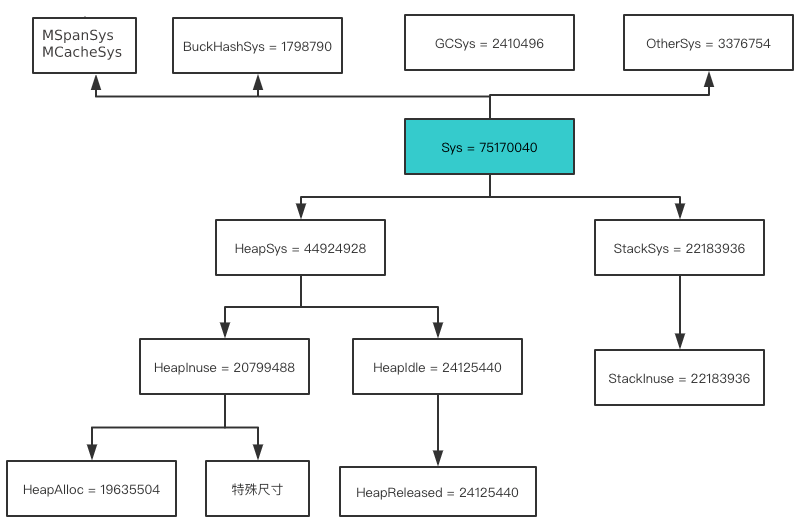

Go 程序员面试
参考说明
- Go 程序员面试
- 基于Go 1.16.10
第1章 逃逸分析
- 堆上对象都会通过调用runtime.newobject分配，该函数会调用runtime.mallocgc
- Go语言没有哪个关键字可以指定变量一定在堆上
- 查看Go支持的操作系统和CPU架构
- Linux内存管理：释放大块内存时的阻塞问题
- C标准库malloc，小于128KB用brk，大于128KB用mmap
- 测试发现munmap一块20GB的内存，会阻塞其他线程的malloc（brk/sbrk/mmap）1秒左右。
- 页框回收算法（PFRA）：大部分内核占用的内存不可回收，大部分用户的可以回收，被mlock标记的不可回收
- 测试释放大块内存的阻塞：munmap、madvise + munmap、mlock + madvise + munmap
- golang内存泄漏排查
- runtime.Memstats的解读见下图
- Go 应用内存占用太多，让排查？
- 分析了runtime.schedinit->runtime.mallocinit
- top 命令的虚拟内存（VIRT）、物理内存（RES）、共享内存（SHR）
- 匿名内存：就是没有文件背景的内存，就是无法和磁盘进行交换的，比如堆栈。
- 共享内存（SHR）包括：
- 程序的代码段。
- 动态库的代码段。
- 通过 mmap 做的文件映射。
- 通过 mmap 做的匿名映射，但指明了MAP_SHARED属性。
- 通过 shmget 申请的共享内存。
- A deep dive into the OS memory use of a simple Go program
- pmap -p 进程ID后，前四个内存段分别是：text、rodata(常量)、data(全局变量)、bss(未初始化)
- cat /proc/进程ID/maps，vvar是内核和进程共享的数据，vdso是系统调用代码实现
- Linux top 命令里的内存相关字段
- 相关英文文章前三章节，Memory - Part 1: Memory Types
- VIRT：所有虚拟内存之和
- RES：所有物理内存之和，不包含交换区的
- SHR：所有物理内存中，共享内存部分
- CODE：所有物理内存中，可执行代码部分
- DATA：所有虚拟内存中，去除共享区域部分剩下的
- ANON = RES - SHR

第2章 延迟语句
- defer的执行过程
- 返回值=xxx
- 调用defer函数
- 空的return
- 探究 Go 源码中 panic & recover 有哪些坑
- 无法捕获的异常：
- 内存溢出：_ = make([]int64, 1<<40)
- map 并发读写
- 栈内存耗尽，栈最大是1G
- 开启一个nil协程：var f func() && go f
- 所有协程都休眠了
- 可以捕获的异常：
- 数组访问越界
- 访问地址无效
- 写nil的map
- 写已经关闭的channel
- 类型断言错误
第3章 数据容器
- make和new的区别
- make只能初始化map、slice、chan；new都能
- make返回值，new返回值的指针
- PS：用new初始化map、slice、chan后值是nil，所以禁止用来初始化map和chan
- make系列函数：必定在堆上分配
- makechan：最终调用mallocgc，当make(chan int)时必定在堆上分配
- makeslice：最终调用mallocgc
- makemap：因为makemap函数返回值是*hmap，所以new(hmap)会执行newobject
- map只有扩容，没有缩容。如果桶过于稀疏，则迁移到新桶重新排列(内存不变)
- map在赋值的时候检查是否需要扩容，调用growWork来扩容。
- 在赋值和删除时进行渐进式搬迁
- 每次搬迁2个根bucket
- copy方法：copy(dst, src []Type)，如果dst容量小于src，容量不会变大
第4章 通道
- 如何优雅的关闭通道：
- 1个sender，1个receiver：sender端关闭
- 1个sender，N个receiver：sender端关闭
- N个sender，1个receiver：receiver端通过closeChan通知sender们退出，不关闭通道(GC来回收)
- N个sender，N个receiver：receiver端通过closeChan通知sender们退出，不关闭通道(GC来回收)
- 读写一个nil通道将永久挂起，即使这个通道后续初始化了，设计缘由见链接
第5章 接口
- 默认所有类型都实现了空接口
- 具体类型转空接口：_type复制具体类型的type，复制值到一块新内存，data指向新内存
- 具体类型转非空接口：itab值在编译期间已经生成，复制值到一块新内存，tab指向itab，data指向新内存
- 接口转接口：
- 动态派发(多态)：根据interfacetype.imethod[i]找到tab.fun[i]，然后执行CALL AX
| 用法 | 说明 |
|---|---|
| 接口A嵌入接口B | A具有B的接口 |
| 结构体A嵌入结构体B | A具有B的属性和方法，强耦合 |
| 结构体A嵌入接口B | A可以使用B的方法，且松耦合 |
第6章 unsafe包
- 聊一个string和[]byte转换问题
- string转[]byte：
[]byte(string)：最终调用runtime.stringtoslicebyte和copy，内存拷贝了一份*(*[]byte)(unsafe.Pointer(&s))：内存零拷贝
- []byte转string：
*(*string)(unsafe.Pointer(&b))：内存零拷贝
第7章 context包
- 因为valueCtx、cancelCtx结构体嵌入了Context接口，实现了松耦合：
- 所以用WithValue()可以传入一个cancelCtx实例进而拥有cancelCtx能力，相反同理
- WithCancel(ctx) (childCtx, cancel)：
- 如果ctx是cancelCtx类型，或者父级中有一个是cancelCtx类型，那么cancel后，childCtx.Done收到通知
- 如果ctx是自定义ctx类型，那么内部额外维护一个协程监听ctx.Done和childCtx.Done
第8章 error
- 包装错误：fmt.Errorf("%w", err)
- 解包错误：errors.Unwrap(err)，如果err包含Unwrap方法就执行，否则返回nil(只解一层)
- 断言错误：errors.As(err, &dst)
- 检查错误源自原始错误：errors.Is(err, io.EOF)
第9章 定时器
- time.NewTimer和time.NewTicker都会生成一个timer挂在P上
- runtime包下：checkTimers检查已到时的timer，schedule会调用checkTimers
- schedule的调度时机见
- checkTimers发现timer已到时，执行timer.f(timer.arg, timer.seq)
- go1.14基于netpoll优化timer定时器实现原理
- 每次添加/修改timer的时候，发现netpoll的pollerPollUntil>timer.when，调用netpollBreak打断netpoll
第10章 反射
- 反射三大定律
- 可以把值转变成反射对象：reflect.ValueOf(i any) Value
- 可以把反射对象转变成值：func (v Value) Interface() (i any)
- 值是指针类型，则转变成反射对象后是CanSet的
第11章 同步
- runtime_Semacquire和runtime_Semrelease的分析
- sync.Mutex：
- go sync.Mutex 源码阅读
- state int32：28b表示阻塞的G的个数，4b表示锁的状态
- sema uint32：维护阻塞的G的队列
- Lock：如果加锁失败，那么调用runtime_SemacquireMutex(sema)休眠
- Unlock：解锁后，调用runtime_Semrelease唤醒第一个休眠的协程
- sync.WaitGroup：
- Add：如果运行计数v==0，那么调用runtime_Semrelease唤醒休眠的协程
- Wait：如果运行计数v>0，那么调用runtime_Semacquire(semap)休眠
- sync.Pool：
- golang的对象池sync.pool源码解读
- 取当前P：pool.Get()->pool.pin()：
- 调用runtime_procPin()禁止P被抢占
- pool没有初始化，调用pool.pinSlow()初始化
- 取当前P本地的private或shared
- 取其它P的shared
- 无锁化编程
- poolLocal.shared：本地的P可以pushHead/popHead，其他P只能popTail
- poolDequeue：单生产者可以pushHead/popHead，多消费者只能popTail
- sync.Map：
- sync.Map源码分析
- 1、空间换时间。通过冗余的两个数据结构(read、dirty)，减少加锁对性能的影响。
- 2、使用只读数据(read)，避免读写冲突。
- 3、动态调整，miss次数多了之后，将dirty数据提升为read。
- 4、double-checking（双重检测）。
- 5、延迟删除。删除一个键值只是打标记，只有在提升dirty的时候才清理删除的数据。
- 6、优先从read读取、更新、删除，因为对read的读取不需要锁。
第12章 调度机制
- G ⇆ M ⇆ P
- 调度循环中如何让出CPU：从源码角度看 Golang 的调度
- 系统调用：有些系统调用会插入代码：
- 执行syscall之前插入runtime.entersyscall：分离M和P
- 执行syscall之后插入runtime.exitsyscall：寻找可用P，没有则分离M和G
- 正常让出CPU：runtime.newproc->newproc1
- 在协程退出的地方加上指令：CALL runtime.goexit1
- 抢占让出CPU：通过信号打断M的运行，6.8.2 抢占式调度
- 主动让出CPU：
- time.Sleep：time.Sleep(time.second)后发生了什么
- sync.Mutex：调用runtime_SemacquireMutex休眠，调用runtime_Semrelease唤醒
- channel：buf存储元素，sendq是等待发送队列，recvq是等待接收队列
- netpoll：每个fd对应一个poolDesc，poolDesc.rg=可读的G，poolDesc.wg=可写的G
- 系统调用：有些系统调用会插入代码：
- G的几种暂停方式：
- notesleep：不会让出GMP，直接让线程休眠直到notewakeup，该方式更快，适用于gcMark、stopm
- notetsleepg：GM绑定，释放P
- runtime.Gosched->runtime.gosched_m->runtime.goschedImpl：G放入全局队列，无需唤醒
- goexit：立即终止G，终止前保证defer正确运行
- gopark：需要通过goready唤醒，G会放在某个等待队列：
- channel的sendq或recvq
- sync.Mutex：semroot(&sema)下的队列
- timer：在每个P的四叉堆中
- netpool：poolDesc.rg=可读的G，poolDesc.wg=可写的G
- netpool：Go netpoller 原生网络模型之源码全面揭秘
- linux内核epool相关三函数：
- int epoll_create(int size)
- int epoll_ctl(int epfd, int op, int fd, struct epoll_event *event)
- int epoll_wait(int epfd, struct epoll_event *events, int maxevents, int timeout)
- Golang对应epool的三函数：
- func netpollinit() // 全局的epfd = epollcreate1()
- func netpollopen(fd uintptr, pd *pollDesc) int32 // 创建事件并加入监听
- func netpoll(delta int64) gList // 调用epoll_wait获取已准备好的fd，进而找到G
- 以go-demo/net.serverTCP()为例：
- net.ListenTCP->sl.listenTCP->internetSocket->socket->fd.listenStream->fd.init->fd.pfd.Init->fd.pd.init
- 会执行runtime_pollServerInit->netpollGenericInit->netpollinit
- 调用netpollopen的三个地方：Go 网络调用 netpoll
- listener.AcceptTCP：listener.AcceptTCP->l.accept->ln.fd.accept
- 调用accept得到connFd：fd.pfd.Accept->accept->Accept4Func
- 调用netpollopen：netfd.init->fd.pfd.Init->fd.pd.init->runtime_pollOpen->poll_runtime_pollOpen
- conn.Read：c.fd.Read->fd.pfd.Read->fd.pd.waitRead->pd.wait->runtime_pollWait
- conn.Write：c.fd.Write->fd.pfd.Write->fd.pd.waitWrite->pd.wait->runtime_pollWait
- listener.AcceptTCP：listener.AcceptTCP->l.accept->ln.fd.accept
- 调用netpoll的两个地方：runtime.schedule和系统监控runtime.sysmon
- net.ListenTCP->sl.listenTCP->internetSocket->socket->fd.listenStream->fd.init->fd.pfd.Init->fd.pd.init
- linux内核epool相关三函数：
- 系统监控线程的五项工作：
- 检查死锁
- 运行计时器 — 获取下一个需要被触发的计时器；
- 轮询网络 — 获取需要处理的到期文件描述符；
- 抢占处理器 — 抢占运行时间较长的或者处于系统调用的协程；
- 垃圾回收 — 在满足条件时触发垃圾收集回收内存
第13章 内存分配
- 内存管理的四个层级：
- 页分配器：mheap
- 对象分配器：mallocgc->mcache->mcentral
- 垃圾回收器：GC
- 拾荒器：Scavenger
- 虚拟地址空间的四种状态
None-sysReserve->Reserved-sysMap->Prepared-sysUsed|sysUnused->Ready- sysReserve:
mmap(v, n, _PROT_NONE, _MAP_ANON|_MAP_PRIVATE, -1, 0) - sysMap:
mmap(v, n, _PROT_READ|_PROT_WRITE, _MAP_ANON|_MAP_FIXED|_MAP_PRIVATE, -1, 0) - sysUsed:
madvise(unsafe.Pointer(beg), end-beg, _MADV_HUGEPAGE) - sysUnused:
madvise(v, n, _MADV_DONTNEED) - sysFree:
munmap(v, n)，Ready|Prepared->None - sysAlloc:
mmap(nil, n, _PROT_READ|_PROT_WRITE, _MAP_ANON|_MAP_PRIVATE, -1, 0)